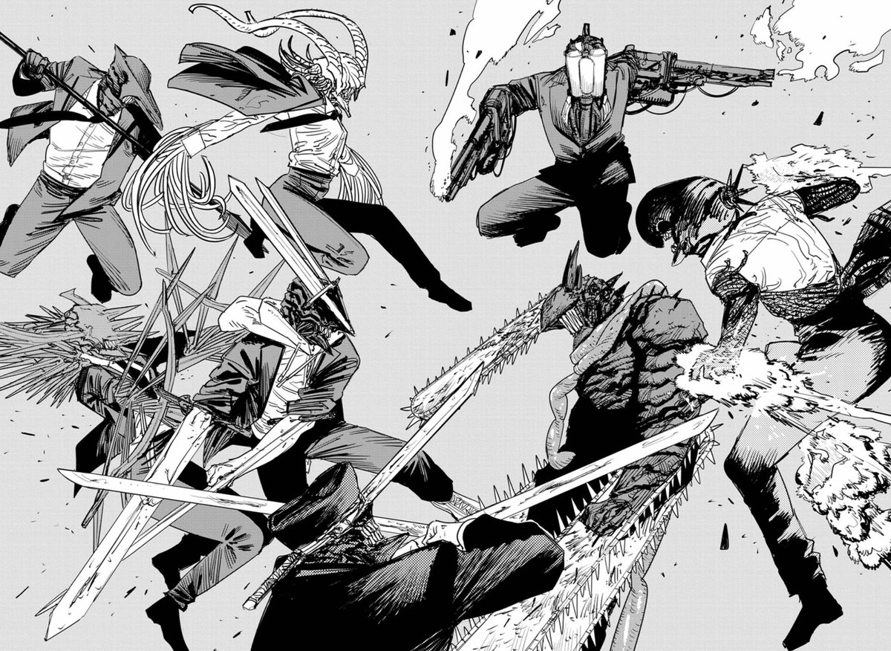
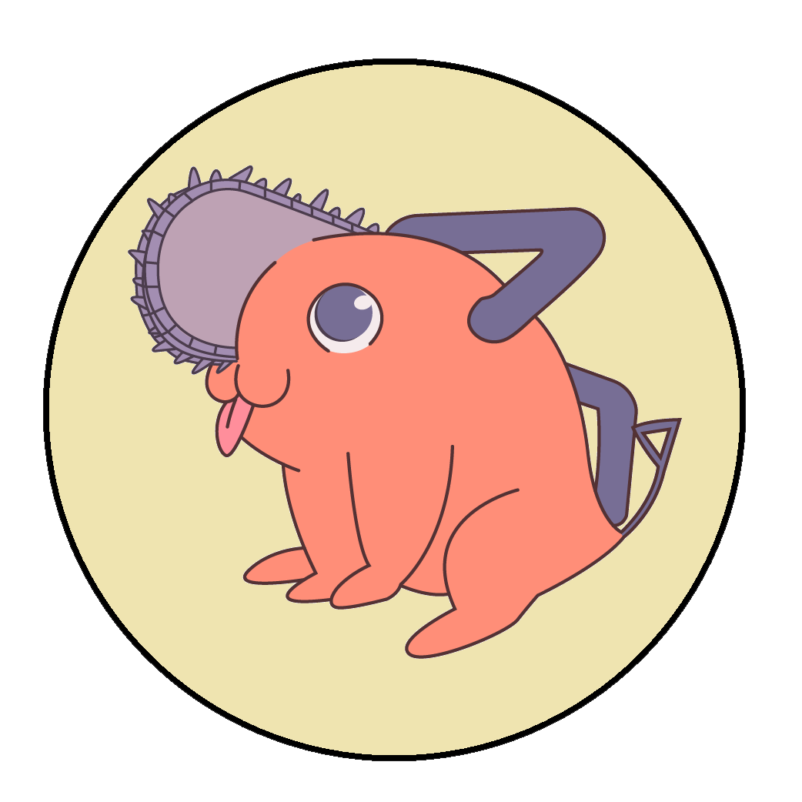

Escenario
La historia se desarrolla en un mundo donde los demonios nacen de los miedos humanos. Los demonios suelen ser
peligrosos y malévolos, su poder es proporcional a la fuerza con que se incita su miedo correspondiente en la
conciencia humana colectiva. Sin embargo, los humanos pueden firmar contratos con ellos para usar sus poderes.
Las personas que se especializan en la caza y el empleo de demonios se denominan cazadores de demonios. Los
demonios se originan en el infierno y existen en un ciclo de vida interminable entre la Tierra y el Infierno: renacen
en la Tierra cuando son asesinados en el Infierno, y viceversa. En el infierno viven demonios extremadamente poderosos
llamados Primal Fears, que nunca han sido asesinados. El tránsito entre los dos mundos parece estar supervisado por el
Diablo del Infierno.
Un diablo puede, en determinadas condiciones, habitar el cuerpo de un ser humano muerto, adquiriendo algunos de
sus recuerdos y personalidad; tal criatura se llama Demonio. Se dice que los demonios que naturalmente tienen una apariencia
humana son benévolos con los humanos.
Los eventos de la historia tienen lugar en 1997, en una línea de tiempo alternativa donde la Unión Soviética todavía
existe, y muchos eventos históricos como el Holocausto parecen no haber ocurrido nunca.

Trama
Denji es un joven atrapado en la pobreza, que trabaja para saldar la deuda de su padre fallecido con la Yakuza trabajando
como cazador de demonios, con la ayuda de Pochita, su compañero canino, el Demonio de la Motosierra. Denji es traicionado
por los Yakuza, quienes lo matan por un contrato con el Demonio Zombi. Pochita hace un contrato con Denji, fusionándose
con él y reviviéndolo como un híbrido humano-demonio, bajo la condición de que Denji tenga una «vida normal».6 Denji
masacra a los Yakuza y es abordado por un equipo de cazadores de demonios gubernamentales, la División de
Seguridad Pública, dirigida por Makima, quienes lo persuaden para que se una a sus filas. Denji está de acuerdo y se
asocia con Power, el Demonio de sangre y Aki Hayakawa, un cazador de demonios autodestructivo. Makima le promete a
Denji cualquier favor, siempre que mate al Demonio arma, el autor de la mayor masacre en la historia de la humanidad.

